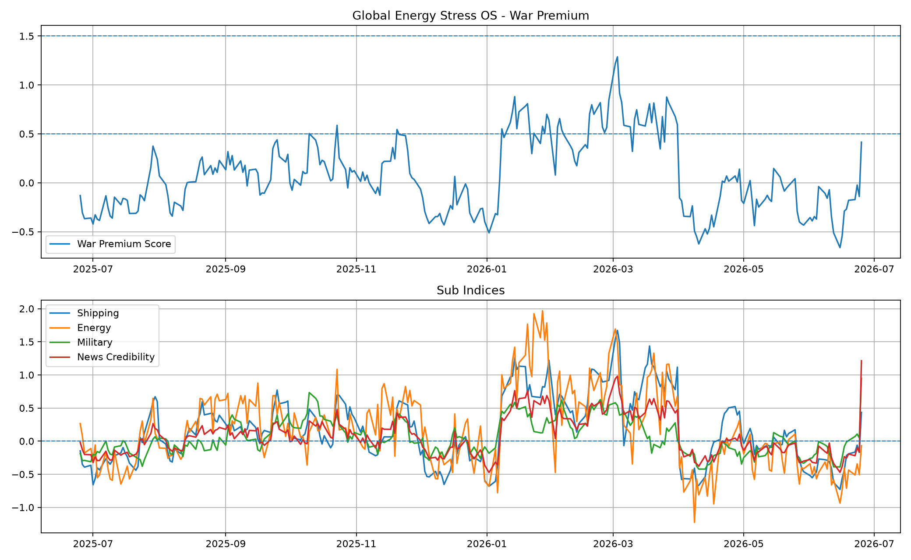

Global Energy Stress OS
Generated: 2026-06-26 11:31 JST
Summary
War Premium Score: 0.42
Hormuz Closure Probability: 27.4%
Regime: Headline Repricing
Stress Indices
Shipping Stress: 0.43
Energy Supply Stress: -0.07
Military Escalation: 0.95
News Credibility: 1.21
News Counts
rss / https://news.google.com/rss/search?q=Hormuz: 106
google_news / Hormuz Strait oil: 100
google_news / Iran oil shipping: 100
google_news / Hormuz shipping: 100
google_news / Middle East tanker: 100
google_news / oil supply disruption: 100
google_news / VLCC freight: 100
google_news / Saudi OSP crude: 100
rss / https://news.google.com/rss/search?q=Iran+Oil: 100
rss / https://news.google.com/rss/search?q=Saudi+OSP: 100
google_news / Dubai Brent spread: 76
google_news / War Risk Premium tanker: 75
google_news / Brent backwardation: 56
gdelt / Hormuz Strait: 0
gdelt / Iran oil: 0
gdelt / oil supply disruption: 0
gdelt / VLCC: 0
gdelt / Saudi OSP: 0
gdelt / Middle East tanker: 0
rss / https://www.imo.org/en/MediaCentre/PressBriefings/Pages/rss.aspx: 0
Interpretation
This is an automated free-data prototype using Yahoo Finance, Google News RSS, GDELT, and public RSS feeds.
Current scoring is rule-based. Ollama-based local LLM classification will be added in a later phase.
